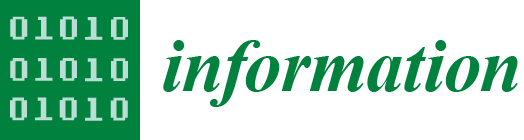
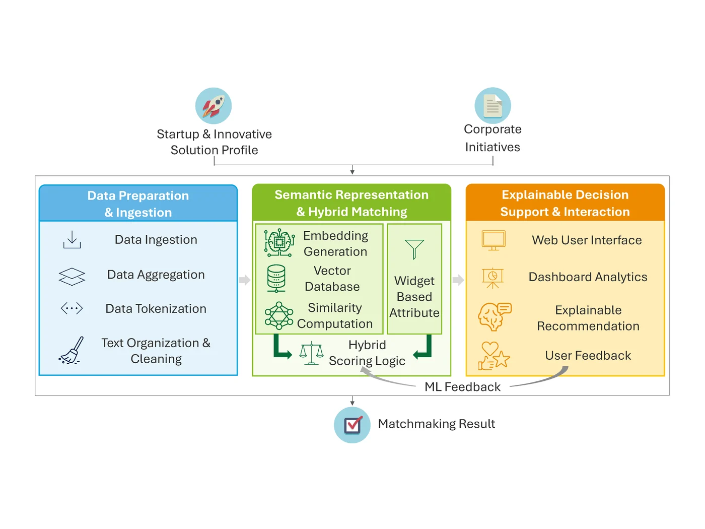
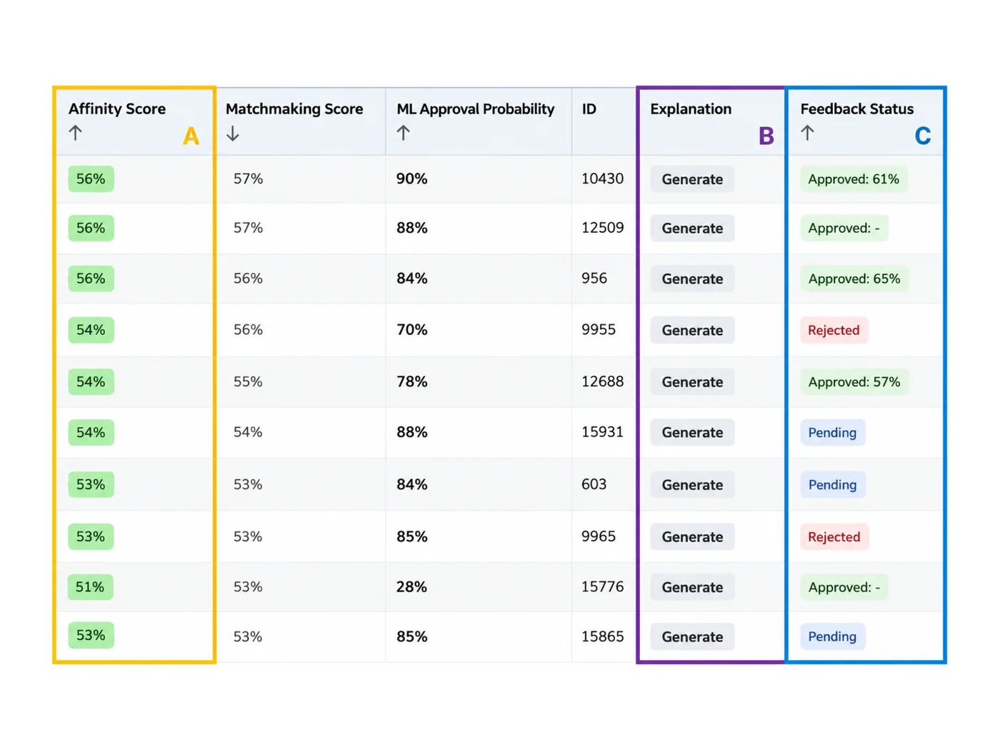
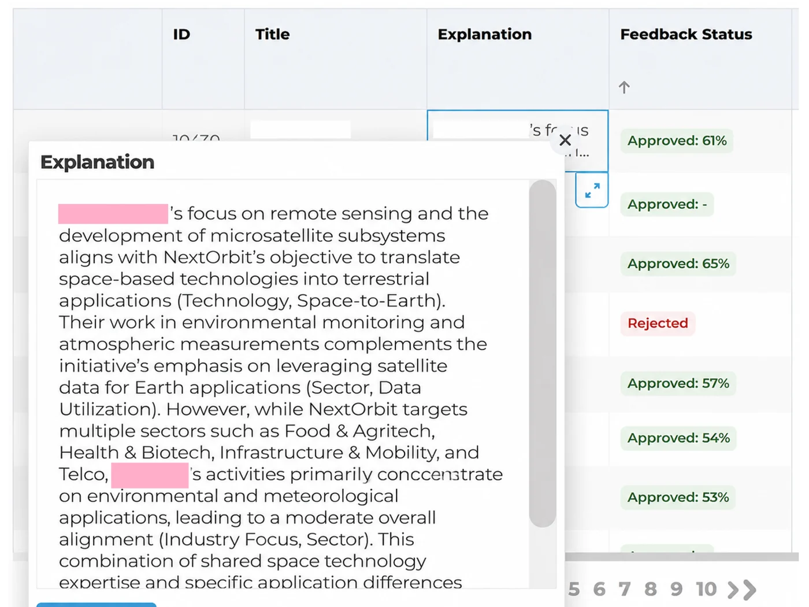
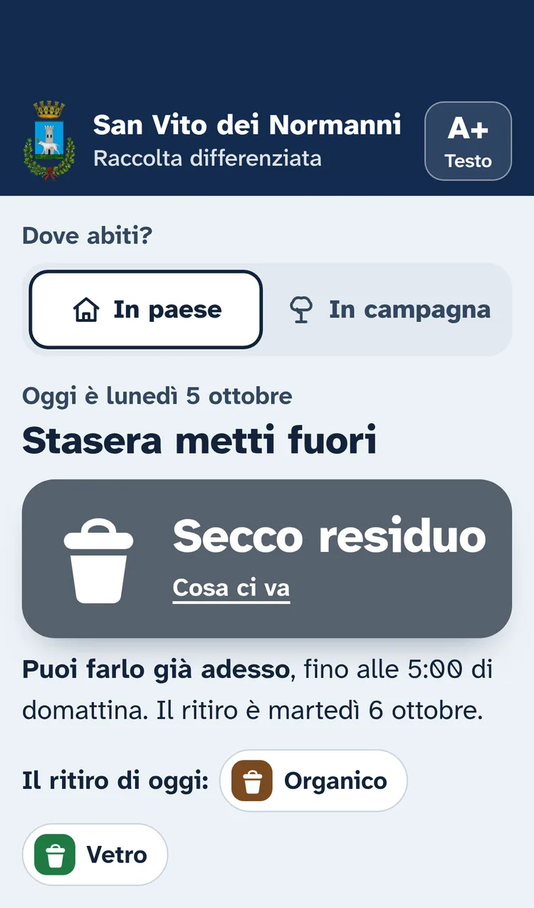
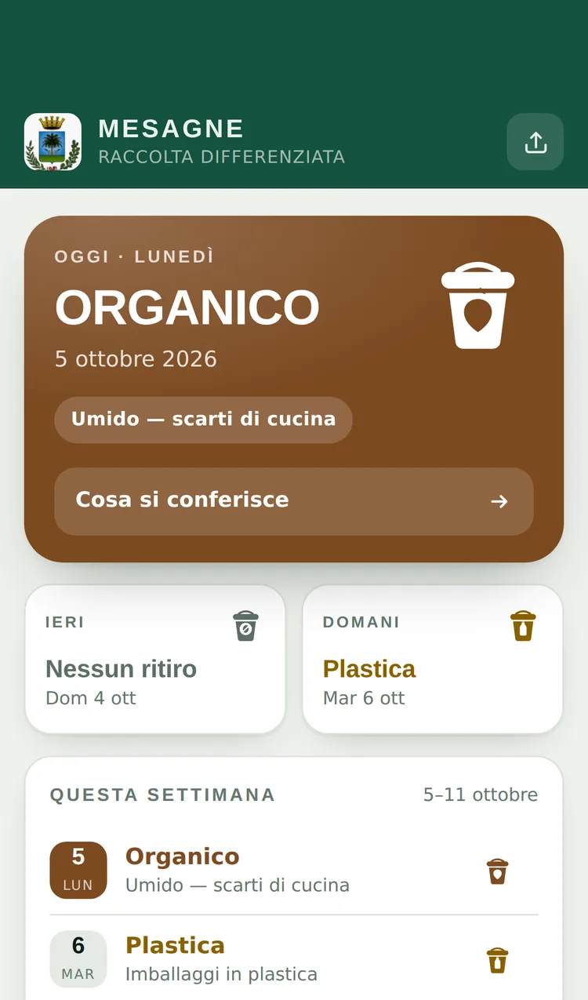
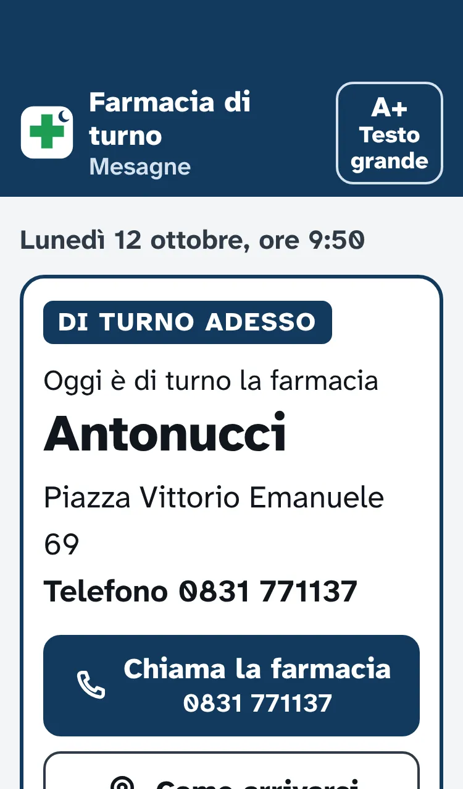
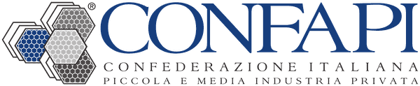

Articolo su NextHub in Information
MDPI, settembre 2026, open access. Ho curato i test di prestazioni e di coerenza tra lingue diverse.
Leggi l’articoloAlessandro Chiri, aperto a nuove opportunità
Affianco aziende ed enti pubblici nei progetti di innovazione, dai requisiti al rilascio. Dal 2018 in Accenture, Micro Focus e oggi Deloitte NextHub.

Profilo
Faccio dialogare business e tecnologia: raccolgo le esigenze di chi decide, le traduco in specifiche per i team tecnici e seguo ogni progetto fino ai risultati.
Ogni esigenza di un’azienda o di un ente diventa un’iniziativa, che la piattaforma confronta con il suo database di startup.

Il motore di raccomandazione dà a ogni startup un punteggio di affinità; io analizzo e convalido le soluzioni più pertinenti.

Per ogni abbinamento la piattaforma scrive una spiegazione, che porto in one-pager e analisi per chi deve decidere.

Sempre tra business e IT, dall’analisi funzionale alla consulenza.
Open innovation su xTech/NextHub: scouting, matchmaking e finanza agevolata.
2024 – oggiTramite Experis Italia: ALM, UFT One e UFT Mobile, anche in Enel.
2019 – 2024Requisiti, processi e KPI in progetti Agile, a Roma.
2018 – 2019Università del Salento.
2018I.T.I.S. «G. Giorgi», specializzazione meccanica.
2010Le ho progettate e sviluppate nel tempo libero, con i dati delle fonti ufficiali: senza account e utilizzabili anche offline.
Cosa mettere fuori stasera, in paese o in campagna, e oltre 400 rifiuti da cercare. Apri l’app
ottobre 2026La raccolta di oggi, ieri e domani, con l’alternanza del giovedì tra vetro e carta. Apri l’app
ottobre 2026Quale delle otto farmacie è di turno adesso, da chiamare con un tocco. Apri l’app
ottobre 2026


Un articolo scientifico sulla piattaforma su cui lavoro, un libro scritto per passione e un intervento da relatore.

MDPI, settembre 2026, open access. Ho curato i test di prestazioni e di coerenza tra lingue diverse.
Leggi l’articoloSettant’anni di videogiochi, dalle origini a oggi: il mio primo libro, in ebook Kindle.
Vedi il libro su Amazon
20 marzo 2026, per Deloitte: innovazione digitale e cybersecurity per le PMI, davanti a imprenditori ed esperti.
Leggi la notizia«Particolarmente apprezzato anche l’intervento di Alessandro Chiri di Deloitte, che ha illustrato scenari e prospettive dell’innovazione digitale applicata alle PMI.»
Gli strumenti che uso nei progetti, il metodo di lavoro e quattro certificazioni Micro Focus.
Certificato su UFT One 15, LoadRunner 2020, ALM/Quality Center 15 e Mobile Center 2.
Requisiti, modellazione dei processi, Agile e Scrum.
One-pager, business case e presentazioni.
Analisi di bandi e opportunità di finanziamento.
Italiano madrelingua, inglese B2 (EF SET).